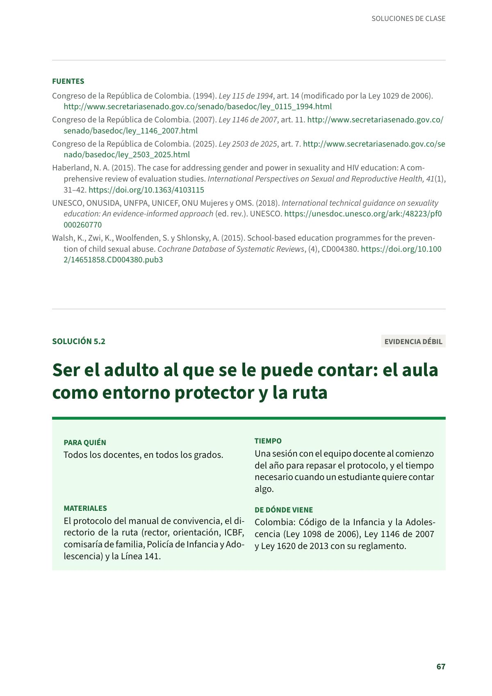
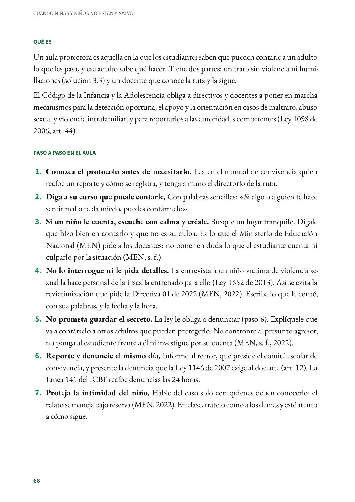
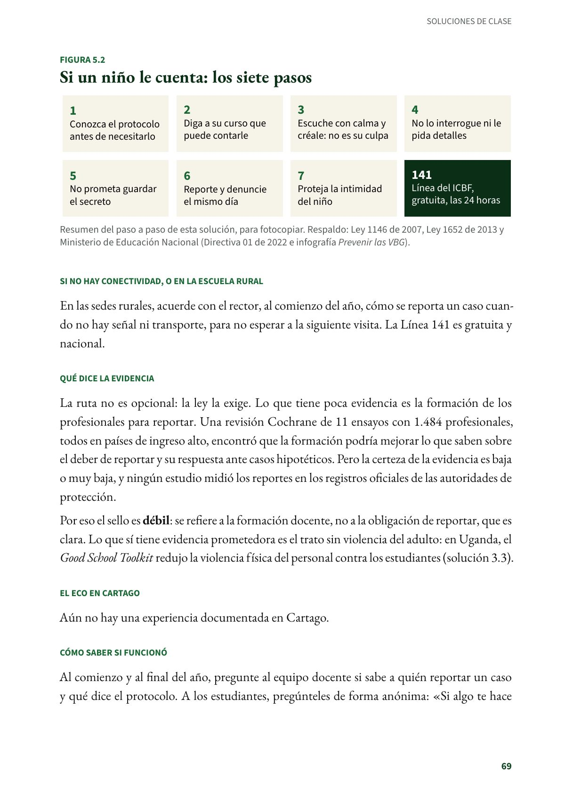
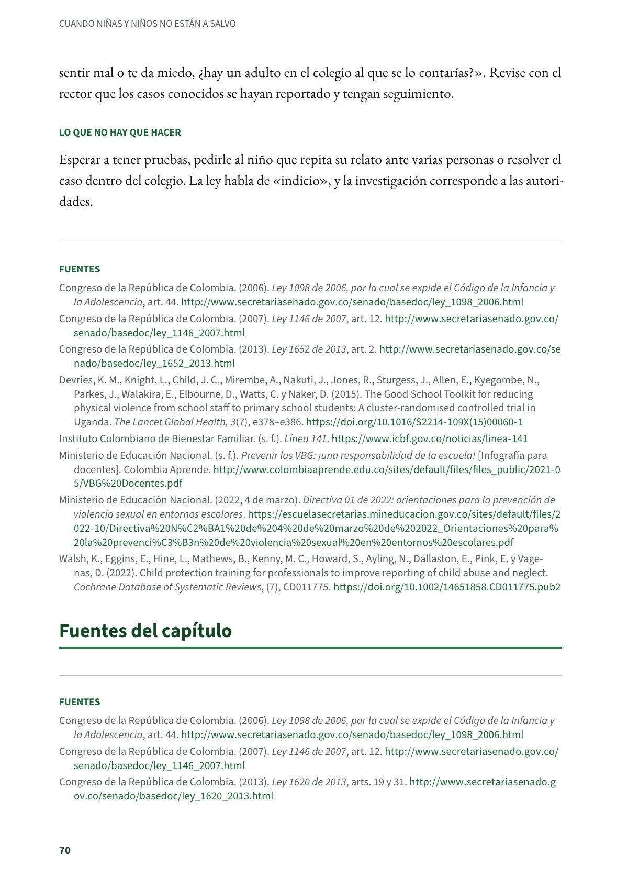

Ser el adulto al que se le puede contar: el aula como entorno protector y la ruta
Un aula protectora es aquella en la que los estudiantes saben que pueden contarle a un adulto lo que les pasa, y ese adulto sabe qué hacer. Todos los docentes, en todos los grados. Evidencia débil.
PDF · 4 págs. · 89 KBEn resumen
- Evidencia: débil.
- Para quién: Todos los docentes, en todos los grados.
- Tiempo: Una sesión con el equipo docente al comienzo del año para repasar el protocolo, y el tiempo necesario cuando un estudiante quiere contar algo.
- Materiales: El protocolo del manual de convivencia, el directorio de la ruta (rector, orientación, ICBF, comisaría de familia, Policía de Infancia y Adolescencia) y la Línea 141.
- De dónde viene: Colombia: Código de la Infancia y la Adolescencia (Ley 1098 de 2006), Ley 1146 de 2007 y Ley 1620 de 2013 con su reglamento.
Qué es
Un aula protectora es aquella en la que los estudiantes saben que pueden contarle a un adulto lo que les pasa, y ese adulto sabe qué hacer. Tiene dos partes: un trato sin violencia ni humillaciones (solución 3.3) y un docente que conoce la ruta y la sigue.
El Código de la Infancia y la Adolescencia obliga a directivos y docentes a poner en marcha mecanismos para la detección oportuna, el apoyo y la orientación en casos de maltrato, abuso sexual y violencia intrafamiliar, y para reportarlos a las autoridades competentes (Ley 1098 de 2006, art. 44).
Paso a paso en el aula
- Conozca el protocolo antes de necesitarlo. Lea en el manual de convivencia quién recibe un reporte y cómo se registra, y tenga a mano el directorio de la ruta.
- Diga a su curso que puede contarle. Con palabras sencillas: «Si algo o alguien te hace sentir mal o te da miedo, puedes contármelo».
- Si un niño le cuenta, escuche con calma y créale. Busque un lugar tranquilo. Dígale que hizo bien en contarlo y que no es su culpa. Es lo que el Ministerio de Educación Nacional (MEN) pide a los docentes: no poner en duda lo que el estudiante cuenta ni culparlo por la situación (MEN, s. f.).
- No lo interrogue ni le pida detalles. La entrevista a un niño víctima de violencia sexual la hace personal de la Fiscalía entrenado para ello (Ley 1652 de 2013). Así se evita la revictimización que pide la Directiva 01 de 2022 (MEN, 2022). Escriba lo que le contó, con sus palabras, y la fecha y la hora.
- No prometa guardar el secreto. La ley le obliga a denunciar (paso 6). Explíquele que va a contárselo a otros adultos que pueden protegerlo. No confronte al presunto agresor, no ponga al estudiante frente a él ni investigue por su cuenta (MEN, s. f., 2022).
- Reporte y denuncie el mismo día. Informe al rector, que preside el comité escolar de convivencia, y presente la denuncia que la Ley 1146 de 2007 exige al docente (art. 12). La Línea 141 del ICBF recibe denuncias las 24 horas.
- Proteja la intimidad del niño. Hable del caso solo con quienes deben conocerlo: el relato se maneja bajo reserva (MEN, 2022). En clase, trátelo como a los demás y esté atento a cómo sigue.
Si no hay conectividad, o en la escuela rural
En las sedes rurales, acuerde con el rector, al comienzo del año, cómo se reporta un caso cuando no hay señal ni transporte, para no esperar a la siguiente visita. La Línea 141 es gratuita y nacional.
Qué dice la evidencia
La ruta no es opcional: la ley la exige. Lo que tiene poca evidencia es la formación de los profesionales para reportar. Una revisión Cochrane de 11 ensayos con 1.484 profesionales, todos en países de ingreso alto, encontró que la formación podría mejorar lo que saben sobre el deber de reportar y su respuesta ante casos hipotéticos. Pero la certeza de la evidencia es baja o muy baja, y ningún estudio midió los reportes en los registros oficiales de las autoridades de protección.
Por eso el sello es débil: se refiere a la formación docente, no a la obligación de reportar, que es clara. Lo que sí tiene evidencia prometedora es el trato sin violencia del adulto: en Uganda, el Good School Toolkit redujo la violencia física del personal contra los estudiantes (solución 3.3).
El eco en Cartago
Aún no hay una experiencia documentada en Cartago.
Cómo saber si funcionó
Al comienzo y al final del año, pregunte al equipo docente si sabe a quién reportar un caso y qué dice el protocolo. A los estudiantes, pregúnteles de forma anónima: «Si algo te hace sentir mal o te da miedo, ¿hay un adulto en el colegio al que se lo contarías?». Revise con el rector que los casos conocidos se hayan reportado y tengan seguimiento.
Lo que no hay que hacer
Esperar a tener pruebas, pedirle al niño que repita su relato ante varias personas o resolver el caso dentro del colegio. La ley habla de «indicio», y la investigación corresponde a las autoridades.
Fuentes
Congreso de la República de Colombia. (2006). Ley 1098 de 2006, por la cual se expide el Código de la Infancia y la Adolescencia, art. 44. secretariasenado.gov.co
Congreso de la República de Colombia. (2007). Ley 1146 de 2007, art. 12. secretariasenado.gov.co
Congreso de la República de Colombia. (2013). Ley 1652 de 2013, art. 2. secretariasenado.gov.co
Devries, K. M., Knight, L., Child, J. C., Mirembe, A., Nakuti, J., Jones, R., Sturgess, J., Allen, E., Kyegombe, N., Parkes, J., Walakira, E., Elbourne, D., Watts, C. y Naker, D. (2015). The Good School Toolkit for reducing physical violence from school staff to primary school students: A cluster-randomised controlled trial in Uganda. The Lancet Global Health, 3(7), e378–e386. doi.org00060-1)
Instituto Colombiano de Bienestar Familiar. (s. f.). Línea 141. icbf.gov.co
Ministerio de Educación Nacional. (s. f.). Prevenir las VBG: ¡una responsabilidad de la escuela! [Infografía para docentes]. Colombia Aprende. colombiaaprende.edu.co
Ministerio de Educación Nacional. (2022, 4 de marzo). Directiva 01 de 2022: orientaciones para la prevención de violencia sexual en entornos escolares. escuelasecretarias.mineducacion.gov.co
Walsh, K., Eggins, E., Hine, L., Mathews, B., Kenny, M. C., Howard, S., Ayling, N., Dallaston, E., Pink, E. y Vagenas, D. (2022). Child protection training for professionals to improve reporting of child abuse and neglect. Cochrane Database of Systematic Reviews, (7), CD011775. doi.org
Así se ve en el libro
4 páginas


